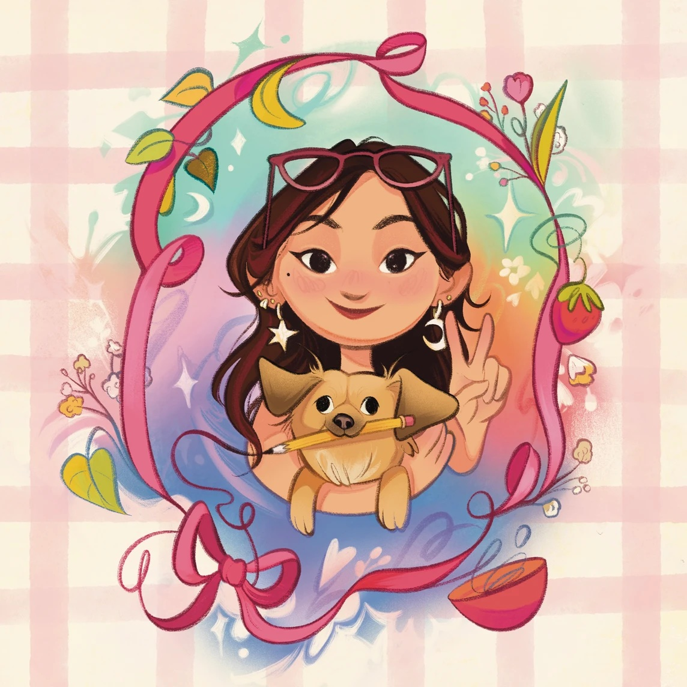
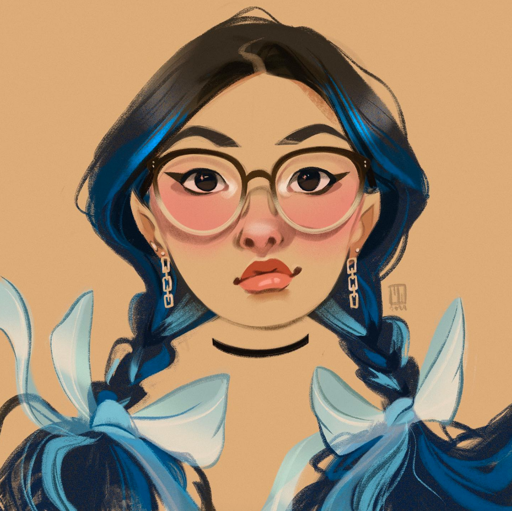
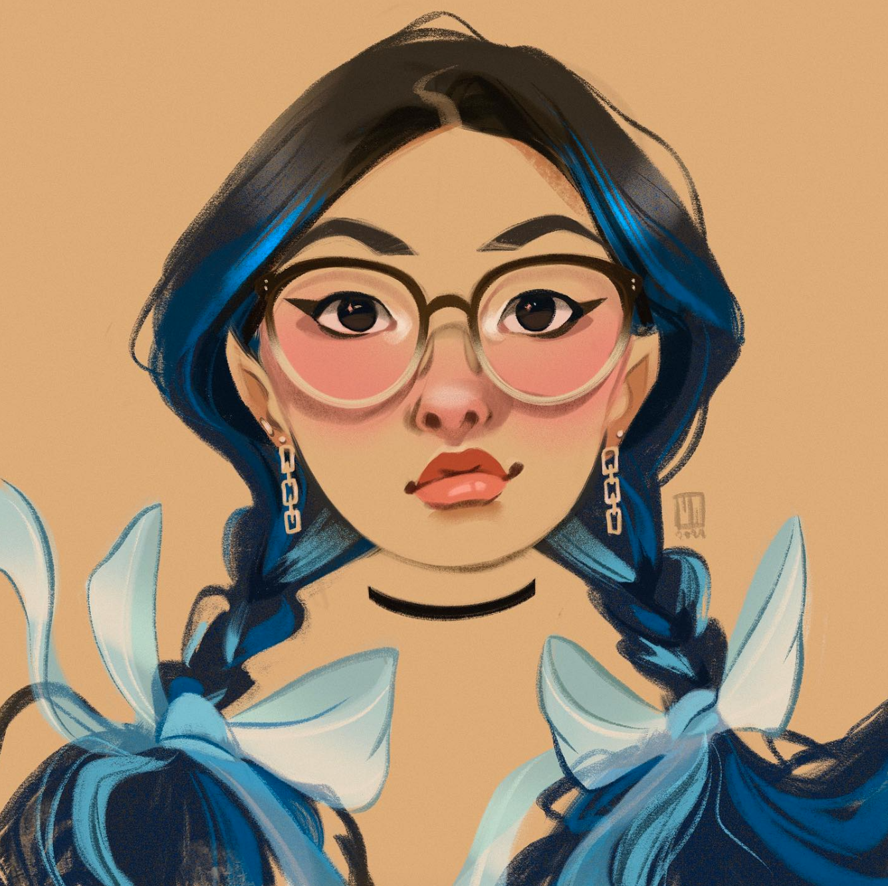

About Me
 

Madi Wong is an illustrator and designer currently studying at Ringling College of Art and Design. She has a love for kidslit, education, and graphic novel illustration. She was born in Hong Kong and has been fortunate enough to travel to many different countries since childhood. She loves using her travel experience as inspiration in her art. Because writing isn't Madi's strong suit, she loves to visually tell stories and connect with others through art. She would describe her art as emotive, energetic, and vivid, with some humorous undertones. Madi loves sightseeing, watching cartoons, and spending time with her family, including her strange rescue dog Lila. Her favorite things to draw are otters, fun florals, expressive characters, and silly little animals.